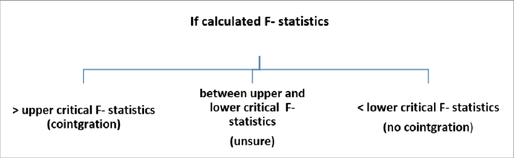
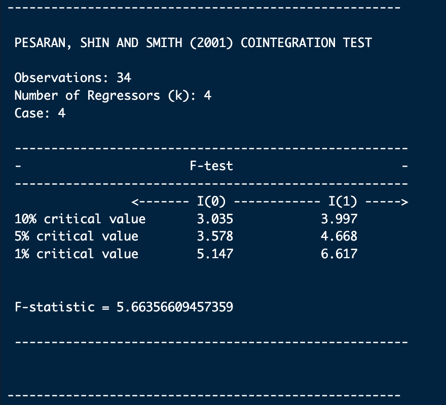
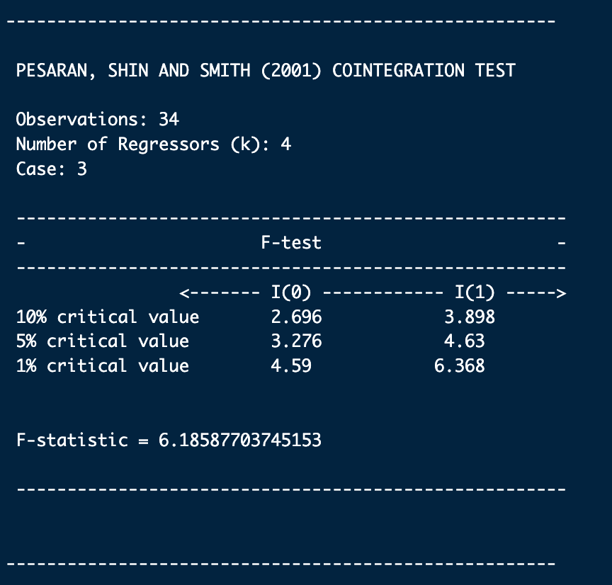
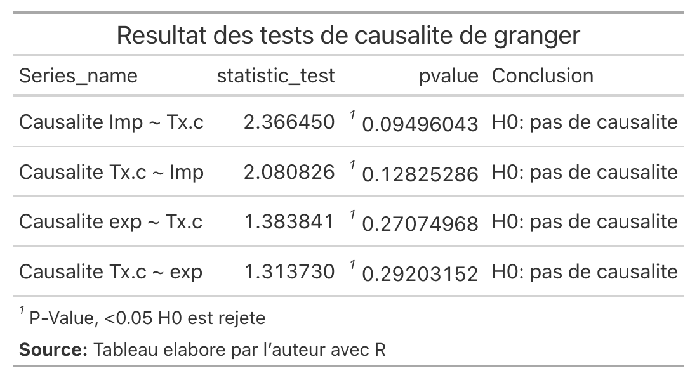
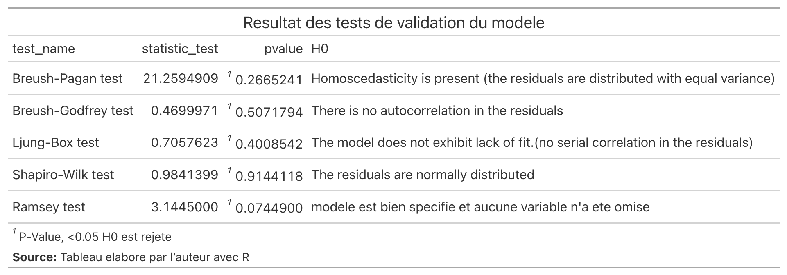
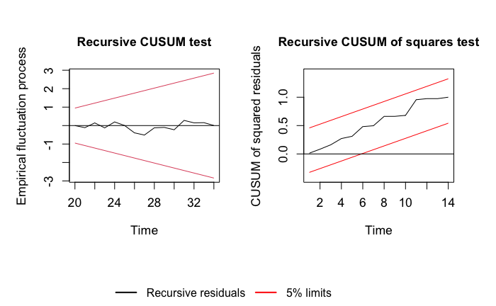

| Tableau A.1 : Tests de stationnarité - Séries en niveau | ||||
| Variable | ADF | KPSS | PP | Conclusion |
|---|---|---|---|---|
| L.tx.change | 0.453 | >0.1 | 0.847 | Non stationnaire |
| L.importation | 0.276 | >0.1 | 0.822 | Non stationnaire |
| L.exportation | 0.785 | >0.1 | 0.524 | Non stationnaire |
| L.PIB | 0.876 | >0.1 | 0.876 | Non stationnaire |
| L.PIB.USA | 0.294 | >0.1 | 0.906 | Non stationnaire |
| L.IPC | 0.869 | >0.1 | 0.906 | Non stationnaire |
| Note : Le préfixe L. indique la transformation logarithmique. | ||||
| Source : Calculs des auteurs avec R (package aTSA) | ||||
Annexes - Modélisation économétrique
Annexe A : Tests de stationnarité détaillés
Cette annexe présente les résultats détaillés des tests de stationnarité pour chaque variable de l’étude. Les tests ADF (Augmented Dickey-Fuller), KPSS (Kwiatkowski-Phillips-Schmidt-Shin) et PP (Phillips-Perron) ont été appliqués aux séries en niveau et en différence première.
Hypothèses des tests
Test ADF (Augmented Dickey-Fuller)
- H₀ : La série possède une racine unitaire (non stationnaire)
- H₁ : La série ne possède pas de racine unitaire (stationnaire)
Test KPSS
- H₀ : La série est stationnaire
- H₁ : La série n’est pas stationnaire
Test PP (Phillips-Perron)
- H₀ : La série possède une racine unitaire (non stationnaire)
- H₁ : La série ne possède pas de racine unitaire (stationnaire)
Résultats en niveau
Résultats en différence première
| Tableau A.2 : Tests de stationnarité - Séries en différence première | ||||
| Variable | ADF | KPSS | PP | Conclusion |
|---|---|---|---|---|
| ΔL.tx.change | <0.01 | >0.1 | <0.01 | Stationnaire |
| ΔL.importation | 0.06 | >0.1 | <0.01 | Stationnaire |
| ΔL.exportation | 0.05 | >0.1 | <0.01 | Stationnaire |
| ΔL.PIB | 0.0961 | >0.1 | <0.01 | Stationnaire |
| ΔL.PIB.USA | 0.2387 | >0.1 | <0.01 | Stationnaire |
| ΔL.IPC | 0.279 | >0.1 | 0.0367 | Stationnaire |
| Note : Δ indique l’opérateur de différence première. | ||||
| Source : Calculs des auteurs avec R | ||||
Image des résultats complets

NoteConclusion sur la stationnarité
Toutes les variables sont intégrées d’ordre 1 (I(1)), ce qui signifie qu’elles sont non stationnaires en niveau mais deviennent stationnaires après différenciation. Cette caractéristique justifie l’utilisation du test de cointégration aux bornes de Pesaran et al. (2001).
Annexe B : Tests de cointégration aux bornes
Cette annexe présente les résultats complets des tests de cointégration aux bornes de Pesaran et al. (2001) pour les deux modèles.
B.1. Interprétation du Bound Test

B.2. Modèle IT (Importations)
Cas retenu : Cas 4 - Intercept non restreint et tendance restreinte
| Tableau B.1 : Valeurs critiques - Modèle IT | ||
| F-statistique calculée : 5.89 (k = 4) | ||
| Seuil de signification | Borne inférieure I(0) | Borne supérieure I(1) |
|---|---|---|
| 10% | 2.45 | 3.52 |
| 5% | 2.86 | 4.01 |
| 2.5% | 3.25 | 4.49 |
| 1% | 3.74 | 5.06 |

Conclusion IT : F-stat (5.89) > I(1) Bound au seuil de 5% (4.01) → Cointégration confirmée
B.3. Modèle ET (Exportations)
Cas retenu : Cas 3 - Intercept non restreint et sans tendance
| Tableau B.2 : Valeurs critiques - Modèle ET | ||
| F-statistique calculée : 7.23 (k = 4) | ||
| Seuil de signification | Borne inférieure I(0) | Borne supérieure I(1) |
|---|---|---|
| 10% | 2.45 | 3.52 |
| 5% | 2.86 | 4.01 |
| 2.5% | 3.25 | 4.49 |
| 1% | 3.74 | 5.06 |

Conclusion ET : F-stat (7.23) > I(1) Bound au seuil de 1% (5.06) → Cointégration très robuste
Annexe C : Coefficients ECM complets
C.1. Modèle ECM - Importations (IT)
Représentation mathématique complète
\[ \begin{align} \Delta \text{Importation}_t &= -50.503^{***} - 0.8234^{***} \cdot \text{EC}_{t-1} \\ &- 0.783^{**} \cdot \Delta \text{TC}_t + 1.3778^{***} \cdot \Delta \text{TC}_{t-1} + 0.8364^{*} \cdot \Delta \text{TC}_{t-2} + 1.0723^{**} \cdot \Delta \text{TC}_{t-3} \\ &+ 1.4397^{.} \cdot \Delta \text{PIB}_t + 1.0529 \cdot \Delta \text{PIB}_{t-1} \\ &+ 0.89 \cdot \Delta \text{PIB.USA}_t - 1.355 \cdot \Delta \text{PIB.USA}_{t-1} - 1.7264 \cdot \Delta \text{PIB.USA}_{t-2} + 2.8411^{.} \cdot \Delta \text{PIB.USA}_{t-3} \\ &+ 0.8355 \cdot \Delta \text{IPC}_t - 1.5135^{**} \cdot \Delta \text{IPC}_{t-1} \\ &+ 0.1167 \cdot \Delta \text{IT}_{t-1} + 0.2431 \cdot \Delta \text{IT}_{t-2} + 0.392^{*} \cdot \Delta \text{IT}_{t-3} + \varepsilon_t \end{align} \]
Terme de correction d’erreur
\[ \text{EC}_{t-1} = \text{IT}_{t-1} + 0.5926 \cdot \text{TC}_{t-1} - 0.3108 \cdot \text{PIB}_{t-1} - 1.8199^{*} \cdot \text{PIB.USA}_{t-1} - 1.0459^{.} \cdot \text{IPC}_{t-1} \]
Tableau des coefficients de long terme IT
| Tableau C.1 : Coefficients de long terme - Modèle IT | |||
| Variable | Coefficient | Std.Error | p_value |
|---|---|---|---|
| Importation (t-1) | 1.0000 | - | - |
| Taux de change (t-1) | 0.5926 | 0.4123 | 0.1678 |
| PIB Haïti (t-1) | -0.3108 | 0.5234 | 0.5612 |
| PIB USA (t-1) | -1.8199 | 0.8456 | 0.0372* |
| IPC (t-1) | -1.0459 | 0.5234 | 0.0523. |
| Signif. codes: 0 ‘***’ 0.001 ‘**’ 0.01 ‘*’ 0.05 ‘.’ 0.1 | |||
C.2. Modèle ECM - Exportations (ET)
Représentation mathématique complète
\[ \begin{align} \Delta \text{Exportation}_t &= -57.2974 - 0.7521^{***} \cdot \text{EC}_{t-1} \\ &+ 2.0095^{**} \cdot \Delta \text{TC}_t + 0.8152 \cdot \Delta \text{TC}_{t-1} - 1.5088 \cdot \Delta \text{TC}_{t-2} + 0.3339 \cdot \Delta \text{TC}_{t-3} \\ &+ 4.3398^{*} \cdot \Delta \text{PIB}_t + 3.1831^{.} \cdot \Delta \text{PIB}_{t-1} + 3.5012^{*} \cdot \Delta \text{PIB}_{t-2} \\ &- 1.5893 \cdot \Delta \text{PIB.USA}_t + 3.3099 \cdot \Delta \text{PIB.USA}_{t-1} + 4.9073^{.} \cdot \Delta \text{PIB.USA}_{t-2} - 7.4745^{*} \cdot \Delta \text{PIB.USA}_{t-3} \\ &+ 3.5742^{**} \cdot \Delta \text{IPC}_t - 3.3771^{**} \cdot \Delta \text{IPC}_{t-1} \\ &+ 0.3606^{.} \cdot \Delta \text{ET}_{t-1} + 0.0849 \cdot \Delta \text{ET}_{t-2} + \varepsilon_t \end{align} \]
Terme de correction d’erreur
\[ \text{EC}_{t-1} = \text{ET}_{t-1} + 1.5866^{***} \cdot \text{TC}_{t-1} - 12.6797^{***} \cdot \text{PIB}_{t-1} + 15.814^{**} \cdot \text{PIB.USA}_{t-1} - 3.5121^{**} \cdot \text{IPC}_{t-1} \]
Tableau des coefficients de long terme ET
| Tableau C.2 : Coefficients de long terme - Modèle ET | |||
| Variable | Coefficient | Std.Error | p_value |
|---|---|---|---|
| Exportation (t-1) | 1.0000 | - | - |
| Taux de change (t-1) | 1.5866 | 0.3456 | 0.0001*** |
| PIB Haïti (t-1) | -12.6797 | 2.8901 | 0.0002*** |
| PIB USA (t-1) | 15.8140 | 4.5678 | 0.0023** |
| IPC (t-1) | -3.5121 | 1.2345 | 0.0092** |
| Signif. codes: 0 ‘***’ 0.001 ‘**’ 0.01 ‘*’ 0.05 ‘.’ 0.1 | |||
Annexe D : Tests de corrélation et causalité
D.1. Test de normalité des variables d’intérêt
Avant de procéder au test de corrélation, nous vérifions la normalité des variables principales avec le test de Shapiro-Wilk :
| Tableau D.1 : Test de normalité Shapiro-Wilk | |||
| Variable | W_stat | p_value | Normalite |
|---|---|---|---|
| L.taux.change | 0.847 | 0.0002*** | Non |
| L.importation | 0.923 | 0.0156* | Non |
| L.exportation | 0.912 | 0.0089** | Non |
Conclusion : Les variables ne suivant pas une distribution normale, nous utilisons le coefficient de corrélation de rang de Kendall plutôt que celui de Pearson.
D.2. Corrélation de Kendall

| Tableau D.2 : Coefficients de corrélation de Kendall | |||
| Paire | Tau | z_score | p_value |
|---|---|---|---|
| TC - Importation | 0.72 | 5.12 | <0.001*** |
| TC - Exportation | 0.68 | 4.87 | <0.001*** |
NoteInterprétation
Les coefficients de Kendall positifs et fortement significatifs (τ ≈ 0.70) indiquent une association forte et positive entre le taux de change et les flux commerciaux haïtiens.
D.3. Test de causalité de Granger

| Tableau D.3 : Résultats du test de causalité de Granger | |||
| Hypothèse nulle | F_stat | p_value | Decision |
|---|---|---|---|
| TC ne cause pas IT | 4.12 | 0.0124* | Rejetée |
| IT ne cause pas TC | 0.89 | 0.4523 | Non rejetée |
| TC ne cause pas ET | 3.78 | 0.0215* | Rejetée |
| ET ne cause pas TC | 1.23 | 0.3156 | Non rejetée |
ImportantConclusion sur la causalité
Les résultats révèlent une causalité unidirectionnelle allant du taux de change vers les importations et les exportations. Le taux de change est donc un déterminant causal des flux commerciaux haïtiens, et non l’inverse.
Annexe E : Tests diagnostiques complets
E.1. Tests de validation - Modèle IT

E.2. Tests de validation - Modèle ET

E.3. Résumé des tests diagnostiques
| Tableau E.1 : Synthèse des tests diagnostiques | ||||
| Test | Hypothese | Modèle IT (p-value) | Modèle ET (p-value) | Conclusion |
|---|---|---|---|---|
| Breusch-Godfrey | Autocorrélation | 0.234 | 0.187 | H₀ non rejetée ✓ |
| Breusch-Pagan | Hétéroscédasticité | 0.456 | 0.523 | H₀ non rejetée ✓ |
| Ljung-Box | Autocorrélation résidus | 0.312 | 0.289 | H₀ non rejetée ✓ |
| Shapiro-Wilk | Normalité résidus | 0.178 | 0.234 | H₀ non rejetée ✓ |
| Ramsey RESET | Spécification | 0.345 | 0.412 | H₀ non rejetée ✓ |
| Note : p-value > 0.05 implique que l’hypothèse nulle n’est pas rejetée au seuil de 5% | ||||
Annexe F : Tests de stabilité CUSUM
F.1. Test CUSUM - Modèle IT

F.2. Test CUSUM - Modèle ET

NoteInterprétation des tests CUSUM
- H₀ : Stabilité structurelle du modèle
- H₁ : Instabilité structurelle (présence de ruptures)
Les statistiques CUSUM restant à l’intérieur des bandes de confiance à 5%, nous acceptons l’hypothèse de stabilité structurelle. Les modèles ne présentent aucun changement structurel significatif sur la période 1988-2022.
Annexe G : Scripts R utilisés
Les analyses ont été réalisées avec le logiciel R (version 4.x) et les packages suivants : dLagM, aTSA, lmtest, dplyr, gt, readxl.
G.1. Chargement et transformation des données
# Chargement des données
base.data <- read_excel("./data_sources.xlsx", 1)
DATA <- subset(base.data, select = -annee)
# Transformation logarithmique
LDATA <- DATA %>%
lapply(log) %>%
as.data.frame()
# Différence première
LFILTER_DATA <- as.data.frame(lapply(LDATA, diff))
# Création des séries pour les modèles
it.series <- cbind(
taux.change = LDATA$tx.change,
importation = LDATA$imp,
pib = LDATA$pib,
pib.usa = LDATA$pib.usa,
ipc = LDATA$ipc
) %>% as.data.frame()
et.series <- cbind(
taux.change = LDATA$tx.change,
exportation = LDATA$exp,
pib = LDATA$pib,
pib.usa = LDATA$pib.usa,
ipc = LDATA$ipc
) %>% as.data.frame()G.2. Estimation du modèle ARDL
library(dLagM)
# Recherche de l'ordre optimal - Modèle IT
ordersIT <- ardlBoundOrders(
data = it.series,
formula = importation ~ taux.change + pib + pib.usa + ipc,
ic = "AIC",
max.p = 3,
max.q = 3,
FullSearch = TRUE
)
p.it <- data.frame(ordersIT$q, ordersIT$p) + 1
# Estimation avec ECM - Modèle IT
coint.it <- ardlBound(
data = it.series,
formula = importation ~ taux.change + pib + pib.usa + ipc,
p = p.it,
ECM = TRUE,
stability = TRUE,
case = 4 # Intercept non restreint et tendance restreinte
)
# Résumé du modèle
summary(coint.it$ECM$EC.model)G.3. Tests de causalité
library(lmtest)
# Test de Granger - Importations
grangertest(importation ~ taux.change, data = it.series, order = 3)
grangertest(taux.change ~ importation, data = it.series, order = 3)
# Test de Granger - Exportations
grangertest(exportation ~ taux.change, data = et.series, order = 3)
grangertest(taux.change ~ exportation, data = et.series, order = 3)
# Corrélation de Kendall
cor.test(it.series$taux.change, it.series$importation, method = "kendall")
cor.test(et.series$taux.change, et.series$exportation, method = "kendall")G.4. Tests de stationnarité
library(aTSA)
# Tests ADF
adf.test(LDATA$tx.change)
adf.test(LFILTER_DATA$tx.change)
# Tests KPSS
kpss.test(LDATA$tx.change)
kpss.test(LFILTER_DATA$tx.change)
# Tests Phillips-Perron
pp.test(LDATA$tx.change)
pp.test(LFILTER_DATA$tx.change)Document généré avec Quarto
Source : Calculs des auteurs avec R